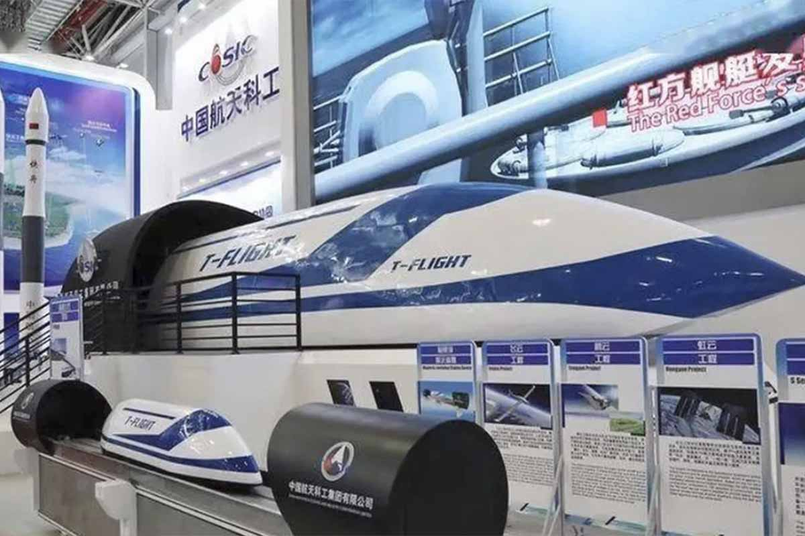

Le T-Flight est un train à sustentation magnétique (maglev) en développement en Chine, visant à révolutionner le transport ferroviaire avec des vitesses surpassant celles des avions commerciaux. Ce train pourrait atteindre des vitesses de 1 000 km/h et relier des villes en un temps record, réduisant ainsi les trajets interurbains.
Le T-Flight offre une vitesse exceptionnelle, atteignant des vitesses de 387 mph (623 km/h) lors des tests, avec des objectifs de 621 mph (1 000 km/h). Il utilise une technologie avancée, avec un système maglev éliminant la friction et permettant des accélérations rapides. Le train pourrait relier Pékin à Shanghai en environ 1 heure, contre plus de 4 heures en train classique.
Malgré ses avancées, le T-Flight fait face à des défis techniques pour atteindre des vitesses supérieures au mur du son et des problèmes d'infrastructure pour sa mise en œuvre à grande échelle. De plus, l'investissement nécessaire pour la construction de ces trains maglev et l'infrastructure associée est considérable.
Le T-Flight représente une avancée majeure dans le domaine du transport à grande vitesse. Si ces défis techniques et financiers sont surmontés, il pourrait transformer les déplacements interurbains en Chine et au-delà, en offrant une alternative plus rapide et plus écologique aux avions traditionnels.
En dépit de la vitesse impressionnante de ce projet, des défis subsistent concernant sa mise en œuvre et la durabilité de cette technologie.